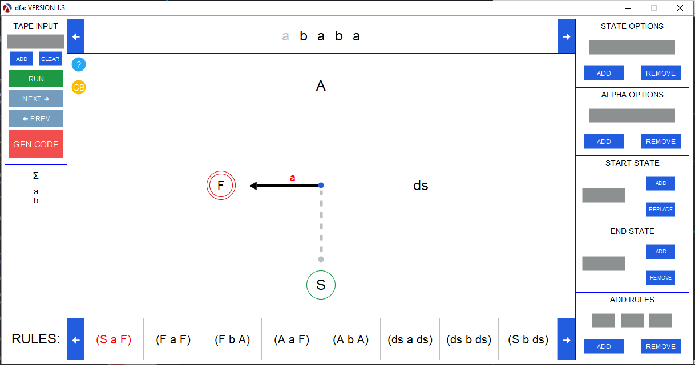
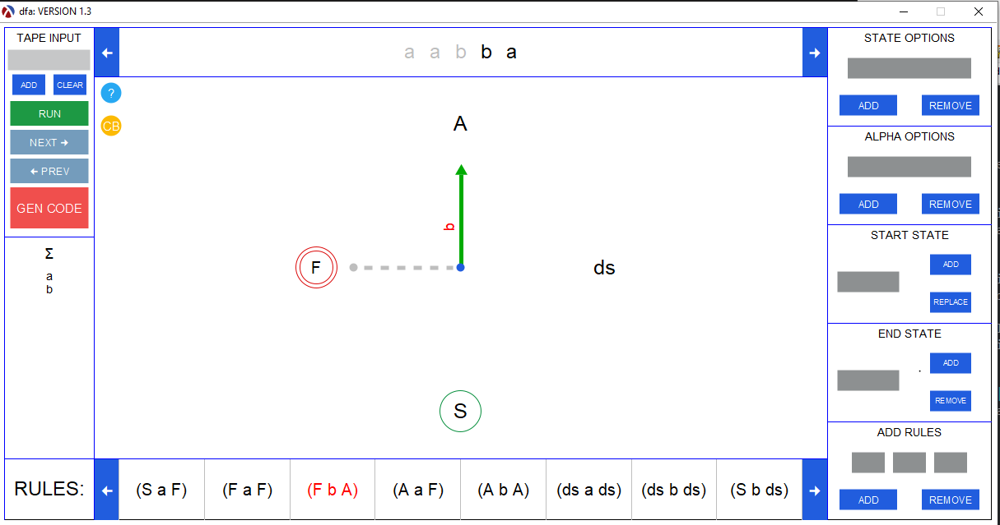

4 State Machine Visualization
You must have GraphViz installed as an enviroment variable for this to work. For more information how to set this up, please see: FSM GraphViz ReadMe
procedure
(sm-graph m) → image?
m : machine?
Generates an image for the given machine’s transition diagram.
procedure
(sm-cmpgraph m w [ #:palette palette #:cutoff cutoff headpos]) → image? m : machine? w : word? palette : symbol? = 'default cutoff : natural? = 100 headpos : natural? = 0
Generates a computation graph image for the given machine and word. A computation graph
visually summarizes the result of all paths in the computation tree generated by applying
the given machine to the given word. Any state at which any computation ends is highlighted
in crimson. Given that a machine may run forever (e.g., when it semidecides a language),
the user may specify the maximum number of steps to explore for all possible computations.
States at which a computation is cut off by reaching this threshold are highlighted using
gold filling. If any final state is highlighted in crimson, then we have visual proof that
at least one computation naturally halts.
The optional keyword parameter palette is a symbol used to select a color blindness pallete: ’default for the default palette and ’deut for the deuteranopia palette. The optional keyword argument cutoff is used to specify the maximum number of steps any possible computation may perform. The optional argument headpos specifies the initial head position on the main tape for Turing machines and multitape Turing machines.
The optional keyword parameter palette is a symbol used to select a color blindness pallete: ’default for the default palette and ’deut for the deuteranopia palette. The optional keyword argument cutoff is used to specify the maximum number of steps any possible computation may perform. The optional argument headpos specifies the initial head position on the main tape for Turing machines and multitape Turing machines.
procedure
(sm-viz m w [ #:add-dead add-dead #:cut-off cut-off] invariant ...) → void m : machine? w : word? add-dead : boolean? = #f cut-off : natural? = 100 invariant : (-> word? boolean?)
Visualizes the given machine being applied to the given word. Currently only NDFAs and PDAs
are supported. Adds a dead state if the optional keyword argument add-dead is set to true.
In the case that a pushdown automata is being visualized, due to the possibility of an infinite
recursion, a cutoff threshold is defined and can be modified by the user setting the optional
keyword argument cut-off to the maximum number of steps a computation can take. Invariant predicates
can optionally be provided for each of the states of the machine, which when given will display
when the predicate holds and has been broken during the visualization.
procedure
(sm-visualize sym) → void?
sym : (or/c 'dfa 'ndfa 'pda 'tm 'mttm 'tm-language-recognizer 'mttm-language-recognizer) (sm-visualize m [inv-list]) → void m : machine? inv-list : (listof (listof state? procedure?)) = '()
When supplied with a symbol as the argument the visualization tool is started for the specified machine type.
When supplied with a state machine as the argument the visualization tool is started with
the state machine built within the tool. When supplied with the optional list of state and
invariant predicates the visualization tool changes the color of the arrow to green or
red to indicate, respectively, if the invariant holds or does not hold. For more information
about the dynamic machine execution vizualization tool, please visit the FSM Website
Examples:
Empty Tool
Examples:
Empty Tool
(sm-visualize 'dfa) (sm-visualize 'ndfa)
Prebuilt Machine
(define a*a (make-dfa '(S F A) '(a b) 'S '(F) '((S a F) (F a F) (F b A) (A a F) (A b A)))) (sm-visualize a*a)

Prebuilt Machine with Invariants
(define S-INV empty?) (define (F-INV consumed-input) (and (eq? (first consumed-input) 'a) (eq? (last consumed-input) 'a))) (define (A-INV consumed-input) (and (eq? (first consumed-input) 'a) (not (eq? (last consumed-input) 'a)))) (define (DEAD-INV consumed-input) (not (eq? (first consumed-input) 'a))) (sm-visualize a*a (list 'S S-INV) (list 'F F-INV) (list 'A A-INV) (list 'ds DEAD-INV))
